📘 BÀI 2
Môn Toán - Lớp 12
📘 BÀI TẬP TRẮC NGHIỆM
Question 1. (THPT Hàm Rồng - Thanh Hóa 2025) Cho hàm số $y = f(x)$ liên tục trên đoạn [−3;5] và có đồ thị như hình vẽ. Giá trị lớn nhất của hàm số $y = f(x)$ trên đoạn [−3;5] bằng 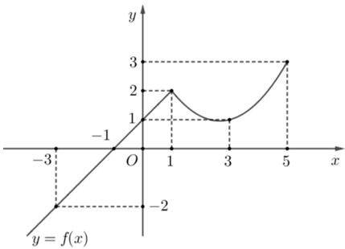
Question 2. (THPT Lương Tài 2 - Bắc Ninh 2025) Cho hàm số $y = f(x)$ liên tục trên đoạn [–4;4] có bảng biến thiên như hình vẽ 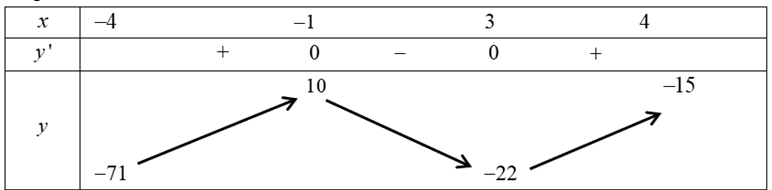 Giá trị nhỏ nhất của hàm số đã cho trên đoạn [–4;4] bằng
Question 3. (THPT Tiên Du - Bắc Ninh 2025) Cho hàm số $y = f(x)$ xác định trên [-2;4] có đồ thị như hình vẽ bên. Giá trị lớn nhất hàm số $y = f(x)$ trên đoạn [0;4] là 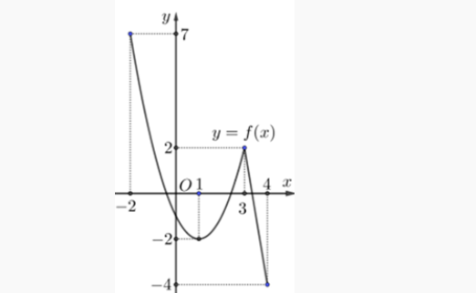
Question 4. (THPT Nguyễn Đăng Đạo - Bắc Ninh 2025) Gọi $M,m$ lần lượt là giá trị lớn nhất và giá trị nhỏ nhất của hàm số $f(x)=x^4-2x^2-1$ trên đoạn [-1;2]. Giá trị của biểu thức $M+3m$ bằng
Question 5. (THPT Gia Bình - Bắc Ninh 2025) Cho hàm số $y = f(x)$ liên tục và có bảng biến thiên trên đoạn [-1;3] như hình vẽ bên. Khẳng định nào đúng? 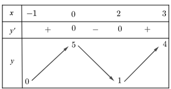
Question 6. (THPT Thạch Thành 1 - Thanh Hóa 2025) Cho hàm số $y = f(x)$ liên tục và có bảng biến thiên trên đoạn [-1;3] như hình vẽ bên. Khẳng định nào sau đây là đúng? 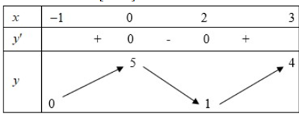
Question 7. (THPT Thạch Thành 1 - Thanh Hóa 2025) Giá trị lớn nhất của hàm số $f(x) = x^3 - 3x^2 - 9x + 10$ trên đoạn [-2;2] bằng:
Question 8. (THPT Yên Lạc - Vĩnh Phúc 2025) Cho hàm số $f(x)$ có đồ thị như hình vẽ 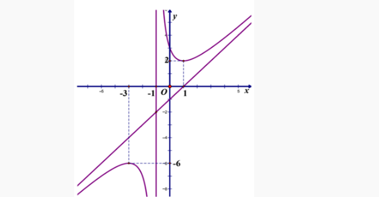 Giá trị lớn nhất của hàm số đã cho trên khoảng $(-\infty;-1)$ bằng
Question 9. (THPT Chuyên Vĩnh Phúc 2025) Cho hàm số $y = f(x)$ có bảng biến thiên trên đoạn [0;3] như sau. 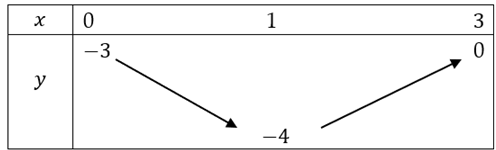 Giá trị nhỏ nhất của hàm số $y = f(x)$ trên đoạn [0;3] là
Question 10. (THPT Nguyễn Viết Xuân - Vĩnh Phúc 2025) Giá trị nhỏ nhất của hàm số $y = x^3 + 3x - 6$ trên đoạn $[1;3]$ là:
Question 11. (THPT Thuận Thành 1\&2 - Bắc Ninh 2025) Giá trị lớn nhất của hàm số $y = x^3 - 3x + 1$ trên đoạn $[-2;0]$ là
Question 12. (THPT Hùng Vương - Bình Thuận 2025) Cho hàm số $y = f(x)$ có bảng biến thiên như sau  Khẳng định nào sau đây sai?
Khẳng định nào sau đây sai?
Question 13. (THPT Triệu Sơn 4 - Thanh Hóa 2025) Cho hàm số $y = f(x)$ liên tục và có đồ thị trên đoạn $[-2;4]$ như hình vẽ bên. 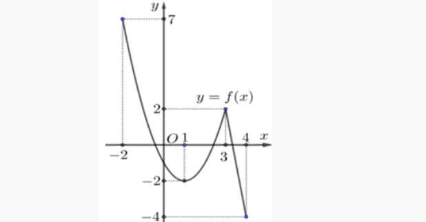 Tổng giá trị lớn nhất và nhỏ nhất của hàm số $y = f(x)$ trên đoạn $[-2;4]$ bằng
Question 14. (THPT Triệu Sơn 1 - Thanh Hóa 2025) Giá trị nhỏ nhất của hàm số $f(x) = x^3 - 3x + 2$ trên đoạn $[-3;3]$ bằng
Question 15. (THPT Cụm trường Hải Dương 2025) Giá trị nhỏ nhất của hàm số $f(x) = x^3 - 6x^2 + 9x - 1$ trên nửa khoảng $[-1; +\infty)$ là 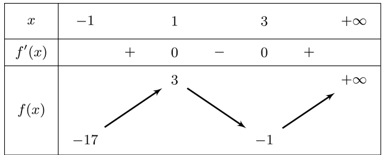
Question 16. (Sở Hà Tĩnh 2025) Cho hàm số $y = f(x)$ có bảng biến thiên như hình bên.  Giá trị lớn nhất của hàm số đã cho trên đoạn $[-2;4]$ bằng
Giá trị lớn nhất của hàm số đã cho trên đoạn $[-2;4]$ bằng
Question 17. (Sở Vĩnh Phúc 2025) Cho hàm số $y = f(x)$ liên tục trên đoạn $[-2;6]$ và có đồ thị như hình vẽ sau: 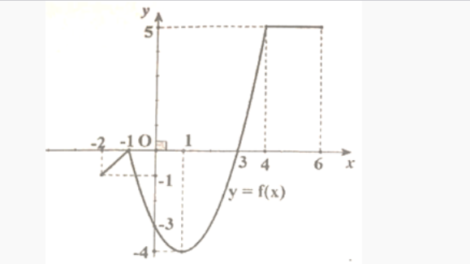 Tổng giá trị lớn nhất và giá trị nhỏ nhất của hàm số $y = f(x)$ trên đoạn $[-2;6]$.
Question 18. (Chuyên Thái Bình 2025) Cho hàm số $y = f(x)$ liên tục và có bảng biến thiên trên đoạn $[-1;3]$ như hình vẽ bên. 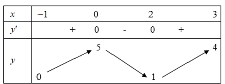 Khẳng định nào sau đây đúng?
Question 19. (Chuyên Vinh 2025) Cho hàm số $y = f(x)$ có bảng xét dấu đạo hàm như sau 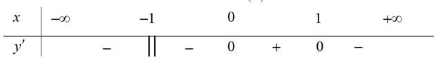 Mệnh đề nào sau đây đúng?
Question 20. (THPT Cẩm Xuyên - Hà Tĩnh 2025) Giá trị lớn nhất của hàm số $f(x) = x^3 + 3x - 6$ trên đoạn $[1;3]$ là
Question 21. (THPT Trần Nguyên Hãn - Hải Phòng 2025) Cho hàm số $y = f(x)$ liên tục trên $[-1;3]$ và có đồ thị như hình bên 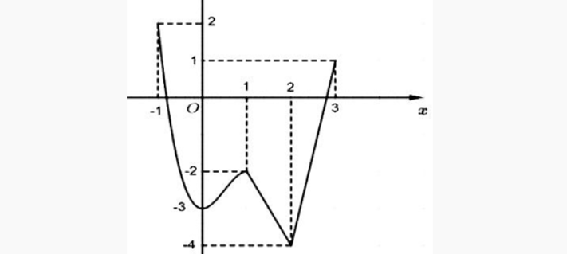 Gọi $M, m$ lần lượt là giá trị lớn nhất và nhỏ nhất của hàm số đã cho trên đoạn $[-1;3]$. Giá trị của $M+m$ là:
Question 22. (THPT Sào Nam - Quảng Nam 2025) Giá trị nhỏ nhất của hàm số $f(x)=-x^3-x+2$ trên đoạn $[-2;0]$ bằng?
Question 23. (Cụm trường Nguyễn Hiền - Lê Hồng Phong - Quảng Nam 2025) Giá trị lớn nhất của hàm số $f(x) = -x^4 + 12x^2 + 1$ trên đoạn $[-1;2]$ bằng
Question 24. (THPT Nông Cống 3 - Thanh Hóa 2025) Tìm giá trị nhỏ nhất của hàm số $y=-x+3-\dfrac{1}{x+2}$ trên nửa khoảng $[-4;-2)$.
Question 25. (THPT Anh Sơn 3 - Nghệ An 2025) Giá trị lớn nhất của hàm số $f(x)=x^3-3x^2-9x+10$ trên đoạn $[-2;2]$ là
Question 26. (Sở Bắc Giang 2025) Giá trị nhỏ nhất của hàm số $y=x^4-4x^2+3$ trên đoạn $[0;4]$ là
Question 29. (Sở Thái Nguyên 2025) Giá trị lớn nhất của hàm số $y=x^3-3x+4$ trên đoạn $[-2;0]$ bằng
Question 30. (Chuyên Hùng Vương - Phú Thọ 2025) Cho hàm số $y=f(x)$ xác định trên $\mathbb{R}$ và có bảng xét dấu $f'(x)$ như sau:  Khẳng định nào dưới đây đúng?
Khẳng định nào dưới đây đúng?
Question 31. (Sở Lào Cai 2025) Cho hàm số $y=f(x)$ liên tục trên đoạn $[1;5]$ và có đồ thị trên như hình vẽ sau 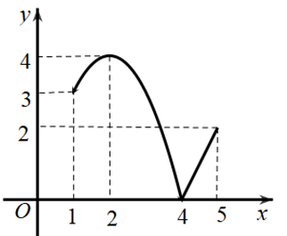 Trên đoạn $[1;5]$, hàm số đã cho đạt giá trị lớn nhất tại điểm
Question 32. (THPT Ngô Sĩ Liên - Bắc Giang 2025) Cho hàm số $f(x)$ liên tục trên $[-1;5]$ và có đồ thị trên đoạn $[-1;5]$ như hình vẽ bên dưới. Tổng giá trị lớn nhất và giá trị nhỏ nhất của hàm số $f(x)$ trên đoạn $[-1;5]$ bằng 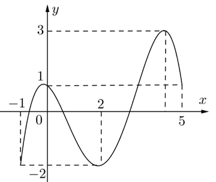
Question 33. (Liên Trường Nghệ An 2025) Tìm giá trị lớn nhất $M$ của hàm số $y = x^3+3x^2-9x-6$ trên đoạn $[-1;2]$.
Question 34. (THPT Hoằng Hóa 2-Thanh Hóa 2025) Cho hàm số $f(x)$ liên tục trên đoạn $[-2;2]$ có đồ thị như hình vẽ. Gọi $M$ và $m$ lần lượt là giá trị lớn nhất và nhỏ nhất của hàm số trên đoạn $[-2;2]$. Khi đó, tổng $M+m$ bằng 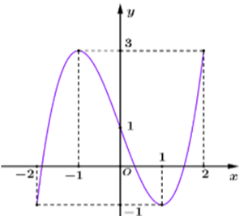
Question 34. (Cụm Ninh Giang - Tứ Kỳ - Gia Lộc 2025) Giá trị lớn nhất $M$ của hàm số $y=x^3+3x^2-9x-6$ trên đoạn $[-1;2]$ là?
Question 35. (THPT Tư Nghĩa 1 - Quảng Ngãi 2025) Cho hàm số $y=f(x)$ có đồ thị trên đoạn $[-3;5]$ như hình vẽ. Gọi $M,m$ lần lượt là giá trị lớn nhất và giá trị nhỏ nhất của hàm số đã cho trên đoạn $[-3;5]$. Tính $2M-m$. 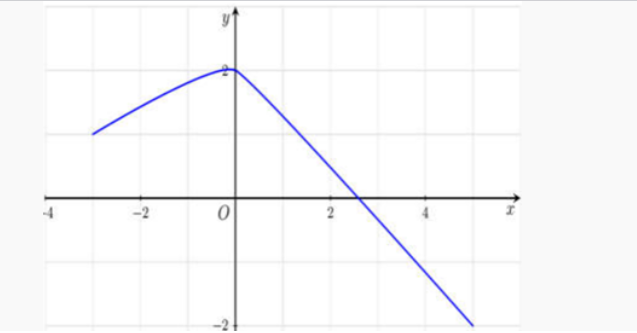
Question 36. (THPT Mai Trúc Loan - Hà Tĩnh 2025) Giá trị lớn nhất của hàm số $y=x^3-3x$ trên đoạn $[0;3]$ bằng
Question 37. (THPT Triệu Quang Phục - Hưng Yên 2025) Cho hàm số $y=f(x)$ liên tục trên đoạn $[-4;3]$, có bảng biến thiên như hình vẽ. Khẳng định nào sau đây là đúng? 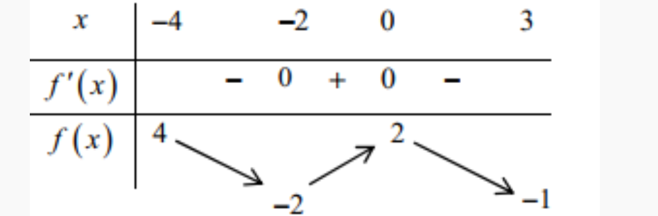
Question 37. (Cụm Chuyên Môn Đăk Lak 2025) Cho hàm số $y=f(x)$, có đồ thị trên đoạn [-2;2] như hình vẽ. 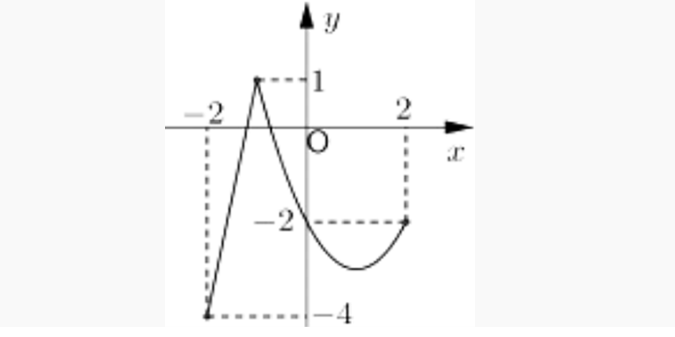 Gọi giá trị lớn nhất và giá trị nhỏ nhất của hàm số $f(x)$ trên $[-2;2]$ lần lượt là $M$ và $m$. Khi đó $M-m$ bằng:
Question 37. (Cụm Chuyên Môn Đăk Lak 2025) Cho hàm số $y=f(x)$ có đồ thị như hình vẽ. Giá trị lớn nhất của hàm số $y=f(x)$ trên đoạn $[-2;0]$ bằng: 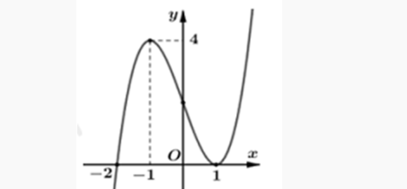
Question 38. (Sở Hậu Giang 2025) Giá trị nhỏ nhất của hàm số $y=x^4-2x^2-5$ trên đoạn $[-2;3]$ bằng
Question 39. (THPT Bắc Đông Quan - Thái Bình 2025) Gọi $M, m$ lần lượt là giá trị lớn nhất và giá trị nhỏ nhất của hàm số $y=2-\sin x$. Khẳng định nào sau đây đúng?
Question 40. (Sở Hà Tĩnh 2025) Cho hàm số $y=f(x)$ có bảng biến thiên trên đoạn $[0;3]$ như sau: 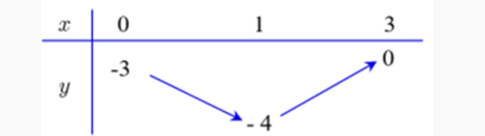 Giá trị nhỏ nhất của hàm số $y=f(x)$ trên đoạn $[0;3]$ là
Question 41. Cho hàm số $y = f(x)$ liên tục và có bảng biến thiên trong đoạn $[-1;3]$ như hình. 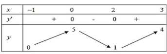 Gọi $M$ là giá trị lớn nhất của hàm số $y = f(x)$ trên đoạn $[-1;3]$. Tìm mệnh đề đúng?
Question 42. Cho hàm số $y = f(x)$ xác định và liên tục trên $[-2;3]$ có bảng biến thiên như hình bên. 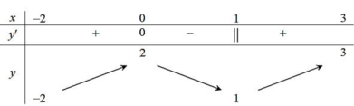 Gọi $M, m$ lần lượt là giá trị lớn nhất và nhỏ nhất của hàm số trên đoạn $[-2;3]$. Tổng $M + m$ bằng
Question 43. Cho hàm số $y = f(x)$ liên tục trên $\mathbb{R}$ và có bảng biến thiên trên đoạn $[-1;4]$ như hình dưới. Gọi $M$ và $m$ lần lượt là giá trị lớn nhất và nhỏ nhất của hàm số đã cho trên đoạn $[-1;4]$. Giá trị của $M + m$ bằng
Question 44. Cho hàm số $y = f(x)$ liên tục trên đoạn $[-1;3]$ và có đồ thị như hình. Gọi $M$ và $m$ lần lượt là giá trị lớn nhất và nhỏ nhất của hàm số đã cho trên đoạn $[-1;3]$. Giá trị của $M - m$ bằng
Question 45. Cho hàm số $y = f(x)$ xác định, liên tục trên đoạn $[-2;2]$ và có đồ thị là đường cong trong hình vẽ bên dưới. Gọi $M, m$ lần lượt là giá trị lớn nhất và nhỏ nhất của hàm số trên đoạn $[-2;2]$. Giá trị của $M - m$ bằng
Question 46. Cho hàm số $y = f(x)$ xác định và liên tục trên $\mathbb{R}$ có đồ thị bên dưới. Gọi $M, m$ lần lượt là giá trị lớn nhất và nhỏ nhất của hàm số trên đoạn $[1;3]$. Giá trị của $M + m$ bằng
Question 47. Giá trị nhỏ nhất của hàm số $f(x) = x^3 - 21x$ trên đoạn $[2;19]$ bằng
Question 48. Tìm giá trị nhỏ nhất của hàm số $y = x^3 - 3x + 5$ trên $[0;2]$.
Question 49. Tìm giá trị lớn nhất của hàm số $f(x) = x^4 - 2x^2 + 1$ trên $[0;2]$.
Question 50. Giá trị lớn nhất của hàm số $f(x) = x^4 - 2x^2 + 3$ trên đoạn $[0;\sqrt{3}]$ bằng
Question 51. Giá trị lớn nhất của hàm số $y = x^4 - 4x^2 + 5$ trên đoạn $[-2;3]$ bằng
Question 52. Giá trị nhỏ nhất của hàm số $f(x) = \dfrac{-2x + 3}{x + 1}$ trên đoạn $[1;4]$ bằng
Question 53. Giá trị lớn nhất của hàm số $f(x) = \dfrac{3x - 1}{x - 3}$ trên đoạn $[0;2]$ bằng
Question 54. Giá trị lớn nhất của hàm số $f(x) = x + \dfrac{1}{x}$ trên đoạn $[1;3]$ bằng
Question 55. Giá trị nhỏ nhất của hàm số $f(x) = x + \dfrac{9}{x}$ trên đoạn $[2;4]$.
Question 56. Giá trị nhỏ nhất của hàm số $y = x^2 + \dfrac{2}{x}$ trên đoạn $[2;3]$ bằng
Question 57. Giá trị lớn nhất của hàm số $y = 1 + \sqrt{4x - x^2}$ bằng
Question 58. Giá trị nhỏ nhất của hàm số $y = \sqrt{x^2 - 2x + 5}$ trên đoạn $[-1;3]$ bằng
Question 59. Giá trị lớn nhất của hàm số $y = x + \sqrt{2 - x^2}$ bằng
Question 60. Giá trị nhỏ nhất của hàm số $y = 3x + \sqrt{10 - x^2}$ bằng
Question 61. Tìm tập giá trị của hàm số $y = \sqrt{x - 1} + \sqrt{9 - x}$
Question 62. Gọi $m, M$ lần lượt là giá trị nhỏ nhất và giá trị lớn nhất của hàm số $f(x) = \dfrac{1}{2}x - \sqrt{x + 1}$ trên đoạn $[0;3]$. Tính tổng $S = 2m + 3M$.
Question 63. Giá trị nhỏ nhất của hàm số $y = x^3 - 3x + 1$ trên khoảng $(0;2)$ là
Question 64. Giá trị lớn nhất của hàm số $y = x(1 - x^2)$ trên khoảng $(0;1)$ là:
Question 65. Giá trị nhỏ nhất của hàm số $y = x - 5 + \dfrac{1}{x}$ trên khoảng $(0;+\infty)$ bằng bao nhiêu?
Question 66. Gọi $m$ là giá trị nhỏ nhất của hàm số $y = x + \dfrac{4}{x}$ trên khoảng $(0;+\infty)$. Tìm $m$
Question 67. Giá trị nhỏ nhất của hàm số $f(x) = x + \dfrac{1}{x}$ trên nửa khoảng $[2;+\infty)$ là:
Question 68. Tìm giá trị lớn nhất của hàm số $y = x - \dfrac{1}{x}$ trên nửa khoảng $(0;3]$.
Question 69. Giá trị nhỏ nhất của hàm số $f(x) = \dfrac{x^2 - x + 1}{x - 1}$ trên khoảng $(1;+\infty)$ là:
Question 70. Với giá trị nào của $x$ thì hàm số $y = x^2 + \dfrac{1}{x}$ đạt giá trị nhỏ nhất trên khoảng $(0;+\infty)$?
Question 71. Cho hàm số $y = \dfrac{-x}{x^2 + 1}$ có giá trị lớn nhất là $M$ và giá trị nhỏ nhất là $m$. Tính giá trị biểu thức $P = M^2 + m^2$.
Question 72. Giá trị lớn nhất của hàm số $y = \dfrac{x^2 + 4x + 5}{x^2 + 2}$ là
Question 73. Cho hàm số $y = x + \dfrac{1}{x}$. Giá trị nhỏ nhất của hàm số trên $(0;+\infty)$ bằng
Question 74. Gọi $M$ và $m$ lần lượt là giá trị lớn nhất và giá trị nhỏ nhất của hàm số $y = \dfrac{x^2 - x + 1}{x^2 + x + 1}$. Khi đó, tích $m.M$ bằng bao nhiêu?
Question 75. Cho hàm số $f(x) = \dfrac{x^2 - 1}{x - 2}$ với $x$ thuộc $D = (-\infty; -1] \cup [1; 3]$. Mệnh đề nào dưới đây đúng?
Question 76. Một vật chuyển động theo quy luật $s = 3t^2 - t^3$. Thời điểm $t$ (s) tại đó vận tốc $v$ (m/s) của chuyển động đạt giá trị lớn nhất là
Question 77. Tìm giá trị nhỏ nhất của hàm số $f(x) = \sin 2x - 4\cos x + 5$ trên đoạn $[0; 2\pi]$.
Question 78. Tìm giá trị lớn nhất của hàm số $f(x) = \dfrac{1}{2}\sin 2x + \cos x$ trên đoạn $[0; \pi]$.
Question 79. Tìm giá trị nhỏ nhất của hàm số $f(x) = \sqrt{3}\sin x + \cos x$ trên đoạn $[0; \pi]$.
Question 80. Tìm giá trị lớn nhất của hàm số $f(x) = x\sin x + \cos x$ trên đoạn $[0; \dfrac{\pi}{2}]$.
Question 81. Tìm giá trị nhỏ nhất của hàm số $f(x) = (1 - x)\sin x - \cos x$ trên đoạn $[0; \dfrac{\pi}{2}]$.
Question 82. Giá trị nhỏ nhất của hàm số $y = \dfrac{\sin^2 x + 3}{\sin x + 1}$ trên $[0; \dfrac{\pi}{2}]$ là
Question 83. Giá trị nhỏ nhất hàm số $y = \sin^3 x - \cos 2x + \sin x + 2$ trên khoảng $(-\dfrac{\pi}{2}; \dfrac{\pi}{2})$ là
Question 84. Giá trị lớn nhất của hàm số $y = \cos^4 x - \cos^2 x + 4$ bằng:
Question 85. Gọi $M, m$ lần lượt là giá trị lớn nhất và nhỏ nhất của hàm số $y = x + \cos^2 x$ trên $[0; \dfrac{\pi}{4}]$. Tính $S = M + m$.
Question 86. Giá trị nhỏ nhất của hàm số $y = xe^x$ trên đoạn $[-2;2]$ bằng
Question 87. Giá trị lớn nhất của hàm số $f(x) = (2x - 3)e^x$ trên $[0;3]$ là
Question 88. Gọi $M, N$ lần lượt là giá trị lớn nhất và giá trị nhỏ nhất của hàm số $y = x^2 e^{-x}$ trên đoạn $[-1;1]$. Tính tổng $M + N$.
Question 89. Giá trị nhỏ nhất, lớn nhất của hàm số $y = x - \ln x$ trên đoạn $[\dfrac{1}{2}; e]$, theo thứ tự là
Question 90. Giá trị lớn nhất của hàm số $y = (x-2)^2 e^x$ trên $[1;3]$ là
Question 91. Giá trị nhỏ nhất của hàm số $y = x^2 - 2\ln x$ trên đoạn $[1;2]$ là
Question 92. Giá trị lớn nhất $M$ và giá trị nhỏ nhất $m$ của hàm số $y = \dfrac{2\ln x}{x}$ trên $[e^{-1}; e]$ là
Question 93. Tìm giá trị nhỏ nhất trên tập xác định của hàm số $f(x) = \dfrac{2^{x-1} - 3}{2^{2-x} + 2}$.
Question 94. Gọi $a, b$ lần lượt là giá trị lớn nhất, giá trị nhỏ nhất của hàm số $y = \log_2 (x^2 + 2x - 2)$ trên đoạn $[-2;0]$. Tổng $a + b$ bằng
Question 95. Tìm giá trị lớn nhất $M$ và giá trị nhỏ nhất $m$ của hàm số $y = \dfrac{\ln x}{x}$ trên đoạn $[1; e^3]$.
Question 96. Cho số thực dương $x$ bất kỳ và số thực dương $y \neq 1$ thỏa mãn $x^{\ln y - 1} \cdot y^{\sqrt{4 - \ln^2 x}} = 1$. Gọi $M, m$ lần lượt là giá trị lớn nhất và giá trị nhỏ nhất của $\log_y x$. Giá trị $M \cdot m$ bằng
Question 97. Giá trị nhỏ nhất của hàm số $y = \log_2^2 x - 4\log_2 x + 1$ trên $[1;8]$ là
Question 98. Cho $a \geq b > 1$. Giá trị lớn nhất của biểu thức $S = \log_a \left( \dfrac{a^2}{b} \right) + \log_b \left( \dfrac{b^3}{a} \right)$ là
Question 99. Cho $x, y$ là các số dương thỏa mãn $xy \leq 4y - 1$. Giá trị nhỏ nhất của $P = \dfrac{6(2x+y)}{x} + \ln \dfrac{x+2y}{y}$ là $a + \ln b$. Giá trị của tích $ab$ là
Question 100. Cho $x, y$ là các số thực dương thoả mãn $\ln x + \ln y \geq \ln(x^2 + y)$. Tìm giá trị nhỏ nhất của $P = x + y$.
Question 101. Cho các số thực $a, b$ thỏa mãn điều kiện $0 < b < a < 1$. Tìm giá trị nhỏ nhất của biểu thức $P = \log_a \dfrac{4(3b-1)}{9} + 8\log_b^2 a - 1$.
Question 102. Cho $a, b$ là hai số thực thay đổi thỏa mãn $1 < a < b \leq 2$, biết giá trị nhỏ nhất của biểu thức $P = 2 \cdot \log_a (b^2 + 4b - 4) + \log_b^2 a$ là $m + 3\sqrt[3]{n}$ với $m, n$ là số nguyên dương. Tính $S = m + n$.
Question 103. Cho hàm số $y = \frac{x+m}{x+1}$ ($m$ là tham số thực) thỏa mãn $\min_{[1;2]} y + \max_{[1;2]} y = \frac{16}{3}$. Mệnh đề nào dưới đây là đúng?
Question 104. Cho hàm số $y = x^4 - 2x^2 + x - m$ ($m$ là tham số thực) thỏa mãn $\min_{[1;3]} y = -1$. Mệnh đề nào dưới đây là đúng?
Question 105. Tìm các giá trị nguyên dương của tham số $m$ để giá trị nhỏ nhất của hàm số $y = \frac{x-m^2+m}{x+1}$ trên $[0;1]$ bằng $-2$.
Question 106. Tìm tham số $m$ để hàm số $y = \frac{mx+1}{x-m}$ đạt giá trị lớn nhất trên $[2;4]$ bằng 2.
Question 107. Tìm tham số $m$ để hàm số $y = x^3 - 3mx^2 + 6$ đạt giá trị nhỏ nhất trên $[0;3]$ bằng 2.
Question 108. Gọi $S$ là tập hợp tất cả giá trị của tham số $m$ để hàm số $y = -x^3+mx^2 - (m^2+m+1)x$ đạt giá trị nhỏ nhất trên $[-1;1]$ bằng $-6$. Tính tổng bình phương các phần tử của $S$.
Question 109. Tổng giá trị lớn nhất và giá trị nhỏ nhất của hàm số $y = \frac{x+m}{x+1}$ trên đoạn $[1;2]$ bằng 8 ($m$ là tham số thực). Khẳng định nào sau đây là đúng?
Question 110. Có bao nhiêu giá trị của tham số $m$ để giá trị lớn nhất của hàm số $y = \frac{x-m^2-2}{x-m}$ trên đoạn $[0;4]$ bằng $-1$.
Question 111. Tìm giá trị dương của tham số $m$ để giá trị nhỏ nhất của hàm số $y = \frac{m^2x-1}{x+2}$ trên đoạn $[1;3]$ bằng 1.
Question 112. Tìm giá trị của tham số thực $m$ để giá trị nhỏ nhất của hàm số $y = \frac{2x+m}{x+1}$ trên đoạn $[0;4]$ bằng 3.
Question 113. Tìm các giá trị của tham số $m$ để giá trị nhỏ nhất của hàm số $y = \frac{x-m^2+m}{x+1}$ trên đoạn $[0;1]$ bằng $-2$.
Question 114. Cho hàm số $y=2x^3-3x^2-m$. Trên $[-1;1]$ hàm số có giá trị nhỏ nhất là $-1$. Tính $m$?
Question 115. Tìm tất cả các giá trị thực của tham số $m$ để hàm số $y=x^3-3x^2+m$ có giá trị nhỏ nhất trên đoạn $[-1;1]$ bằng $\sqrt{2}$
Question 116. Có một giá trị $m_0$ của tham số $m$ để hàm số $y=x^3+(m^2+1)x+m+1$ đạt giá trị nhỏ nhất bằng 5 trên đoạn $[0;1]$. Mệnh đề nào sau đây là đúng?
Question 117. Nếu hàm số $y=x+m+\sqrt{1-x^2}$ có giá trị lớn nhất bằng $2\sqrt{2}$ thì giá trị của $m$ là
Question 118. Biết rằng giá trị nhỏ nhất của hàm số $y=mx+\frac{36}{x+1}$ trên $[0;3]$ bằng 20. Mệnh đề nào sau đây đúng?
Question 119. Biết $S$ là tập giá trị của $m$ để tổng giá trị lớn nhất và giá trị nhỏ nhất của hàm số $y=x^4-m^2x^3-2x^2-m$ trên đoạn $[0;1]$ bằng $-16$. Tính tích các phần tử của $S$.
Question 120. Cho hàm số $f(x)=m\sqrt{x-1}$ ($m$ là tham số thực khác 0). Gọi $m_1, m_2$ là hai giá trị của $m$ thoả mãn $\min_{[2;5]} f(x) + \max_{[2;5]} f(x) = m^2-10$. Giá trị của $m_1+m_2$ bằng
Question 121. Tìm tất cả các giá trị của tham số $m$ để hàm số $y=\frac{x+m}{x^2+x+1}$ có giá trị lớn nhất trên $\mathbb{R}$ nhỏ hơn hoặc bằng 1.
Question 122. Cho hàm số $y=x^3-3mx^2+3(m^2-1)x+2028$. Có tất cả bao nhiêu giá trị nguyên của $m$ sao cho hàm số có giá trị nhỏ nhất trên khoảng $(0;+\infty)$?
Question 123. Một chất điểm chuyển động theo quy luật $s(t) = 6t^2 - t^3$. Tính thời điểm t (giây) tại đó vận tốc v (m/s) của chuyển động đạt giá trị lớn nhất.
Question 124. Một vật chuyển động theo quy luật $S=\frac{1}{4}t^4 - \frac{3}{2}t^2+2t-100$ với $t$ (giây) là khoảng thời gian kể từ lúc vật bắt đầu chuyển động, $S$ (mét) là quãng đường vật đi được trong khoảng thời gian đó. Hỏi vận tốc của vật đạt giá trị nhỏ nhất tại thời điểm $t$ bằng bao nhiêu?
Question 125. Trong tất cả các hình chữ nhật có diện tích $S$, hình chữ nhật có chu vi nhỏ nhất bằng bao nhiêu?
Question 126. Một tấm kẽm hình vuông ABCD có cạnh bằng 30 (cm). Người ta gập tấm kẽm theo hai cạnh EF và GH cho đến khi AD và BC trùng nhau như hình vẽ dưới đây để được một hình lăng trụ khuyết hai đáy. Giá trị của x để thể tích khối lăng trụ lớn nhất là 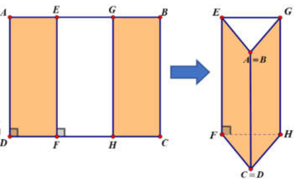
Question 127. Khi nuôi cá thí nghiệm trong hồ, một nhà sinh vật học thấy rằng: Nếu trên mỗi đơn vị diện tích mặt hồ có $n$ con cá thì trung bình mỗi con cá sau một vụ cân nặng $P(n) = 480-20n$ (gam). Hỏi phải thả bao nhiêu cá trên một đơn vị diện tích của mặt hồ để sau một vụ thu hoạch cá đạt được tổng khối lượng lớn nhất?
Question 128. Độ giảm huyết áp của một bệnh nhân được cho bởi công thức $G(x) = 0,025x^2(30-x)$, trong đó $x$ là liều lượng thuốc được tiêm cho bệnh nhân ($x$ được tính bằng miligam). Tính liều lượng thuốc cần tiêm cho bệnh nhân để huyết áp giảm nhiều nhất và tính độ giảm đó.
Question 129. Một loại thuốc được dùng cho một bệnh nhân và nồng độ thuốc trong máu của bệnh nhân được giám sát bởi bác sĩ. Biết rằng nồng độ thuốc trong máu của bệnh nhân sau khi tiêm vào cơ thể trong $t$ giờ được cho bởi công thức $c(t) = \frac{t}{t^2+1}$ (mg/L). Sau khi tiêm thuốc bao lâu thì nồng độ thuốc trong máu của bệnh nhân cao nhất?
Question 130. Nhà máy A chuyên sản xuất một loại sản phẩm cung cấp cho nhà máy B. Hai nhà máy thoả thuận rằng: Hàng tháng nhà máy A cung cấp cho nhà máy B số lượng sản phẩm theo đơn đặt hàng của B (tối đa 100 tấn sản phẩm). Nếu số lượng đặt hàng là x tấn sản phẩm thì giá bán cho mỗi tấn sản phẩm là $P(x) = 45-0,001x^2$ (triệu đồng). Chi phí để A sản xuất x tấn sản phẩm trong một tháng bao gồm:
- Chi phí cố định: 100 triệu đồng.
- Cho phí cho mỗi tấn sản phẩm làm ra: 30 triệu đồng.
Question 131. Một con cá hồi bơi ngược dòng để vượt một khoảng cách là 300 km. Vận tốc dòng nước là 6 km/h. Nếu vận tốc của cá bơi khi nước đứng yên là $v$ (km/h) thì năng lượng tiêu hao của cá trong $t$ giờ được cho bởi công thức $E(v) = cv^3t$, trong đó $c$ là một hằng số, $E$ được tính bằng jun. Tìm vận tốc bơi của cá khi nước đứng yên để năng lượng tiêu hao là ít nhất.
Question 132. Cho một tấm nhôm hình chữ nhật có chiều dài bằng 10cm và chiều rộng bằng 8cm. Người ta cắt bỏ ở bốn góc của tấm nhôm đó bốn hình vuông bằng nhau, mỗi hình vuông có cạnh bằng $x(cm)$, rồi gập tấm nhôm lại (như hình vẽ) để được một cái hộp không nắp. Tìm $x$ để hộp nhận được có thể tích lớn nhất. 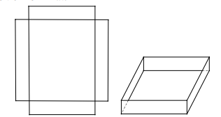
Question 133. Một người nông dân có 15.000.000 đồng muốn làm một cái hàng rào hình chữ E dọc theo một con sông (như hình vẽ) để làm một khu đất có hai phần chữ nhật để trồng rau. Đối với mặt hàng rào song song với bờ sông thì chi phí nguyên vật liệu là 60.000 đồng một mét, còn đối với ba mặt hàng rào song song nhau thì chi phí nguyên vật liệu là 50.000 đồng một mét. Tìm diện tích lớn nhất của đất rào thu được 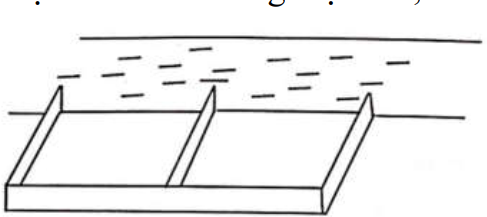
Question 134. Từ một tấm bạt hình chữ nhật có kích thước $12m \times 6m$ như hình vẽ. Một nhóm học sinh trong quá trình đi dã ngoại đã gập đôi tấm bạt lại theo đoạn nối trung điểm 2 cạnh là chi rộng của tấm bạt sao cho 2 mép chiều dài của tấm bạt sát đất và cách nhau $x$ (m) (như hình vẽ). Tìm $x$ để khoảng không gian trong lều là lớn nhất. 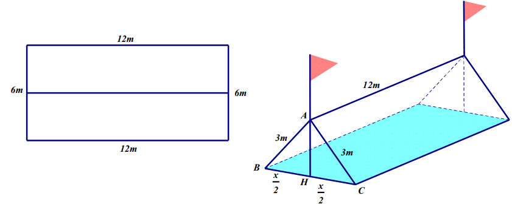
Question 135. Cho một tấm nhôm hình vuông cạnh 6 cm. Người ta muốn cắt một hình thang như hình vẽ trong đó $AH=x, AE=2, CG=y, CF=3$. Tìm tổng $x+y$ để diện tích hình thang EFGH đạt giá trị nhỏ nhất. 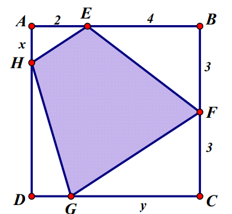
Question 136. Một người đàn ông muốn chèo thuyền ở vị trí A tới điểm B về phía hạ lưu bờ đối diện, càng nhanh càng tốt, trên một bờ sông thẳng rộng 3 km (như hình vẽ). Anh có thể chèo thuyền của mình trực tiếp qua sông để đến C và sau đó chạy đến B, hay có thể chèo trực tiếp đến B, hoặc anh ta có thể chèo thuyền đến một điểm D giữa C và B và sau đó chạy đến B. Biết anh ấy có thể chèo thuyền 6 km/h, chạy 8 km/h và quãng đường BC = 8 km. Biết tốc độ của dòng nước là không đáng kể so với tốc độ chèo thuyền của người đàn ông. Tính khoảng thời gian ngắn nhất (đơn vị: giờ) để người đàn ông đến B. 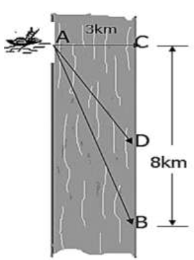
Question 137. Một ngọn hải đăng đặt ở vị trí A cách bờ biển một khoảng AB = 5 km. Trên bờ biển có một cái kho ở vị trí C cách B một khoảng là 7 km. Người canh hải đăng có thể chèo đò từ A đến vị trí M trên bờ biển với vận tốc 4km/h rồi đi bộ đến C với vận tốc 6 km/h. Vị trí của điểm M cách B một khoảng nhất với giá trị nào nhất để người đó đến kho nhanh nhất? 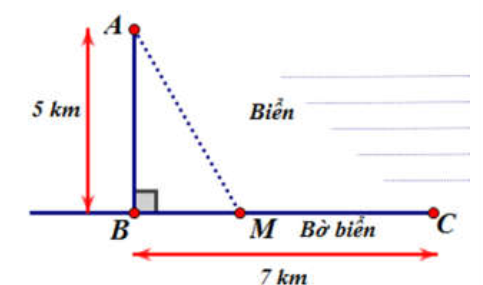
Question 138. Cho nửa đường tròn đường kính AB = 2 và hai điểm C, D thay đổi trên nửa đường tròn đó sao cho ABCD là hình thang. Diện tích lớn nhất của hình thang ABCD bằng
Question 139. Một sợi dây kim loại dài 60cm được cắt thành hai đoạn. Đoạn dây thứ nhất uốn thành hình vuông cạnh a, đoạn dây thứ hai uốn thành đường tròn bán kính r. Để tổng diện tích của hình vuông và hình tròn nhỏ nhất thì tỉ số $\frac{a}{r}$ bằng: 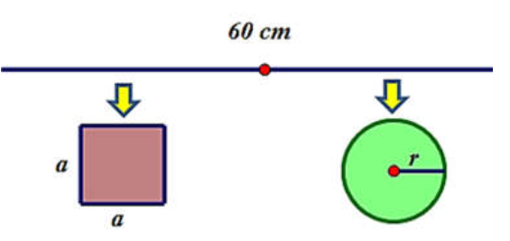
Question 140. Một mảnh giấy hình chữ nhật có chiều dài 12cm và chiều rộng 6cm. Thực hiện thao tác gấp góc dưới bên phải sao cho đỉnh được gấp nằm trên cạnh chiều dài còn lại. Hỏi chiều dài L tối thiểu của nếp gấp là bao nhiêu? 
Question 141. Hình dáng phần đất liền của hai xã thuộc tỉnh Đồng Tháp được mô hình hóa bởi đồ thị hàm số $y=\frac{x^2+ax+b}{x-2}$; biết đồ thị có một điểm cực trị là (1; 1), với hệ trục tọa độ Oxy như hình vẽ, đơn vị trên mỗi trục là 10 mét. Để thuận tiện cho giao thông hai xã, lãnh đạo tỉnh đã phê duyệt dự án xây một chiếc cầu nối phần đất liền của hai xã này. Nhằm tiết kiệm chi phí cho công trình, người kỹ sư trưởng thiết kế có nhiệm vụ nghiên cứu để chọn được hai vị trí A, B trên phần đất liền hai xã sao cho độ dài chiếc cầu (đoạn AB) là ngắn nhất có thể. Hỏi độ dài ngắn nhất của chiếc cầu đó (tính theo đường chim bay) là bao nhiêu mét (làm tròn đến hàng phần chục)? 
Question 142. Một chiến sĩ đặc công đang nấp ở bờ sông, cần phải bơi qua bờ bên kia để tấn công mục tiêu. Có thể xem con sông này là thẳng và có độ rộng 100 m; vận tốc bơi của chiến sĩ bằng một phần ba vận tốc chạy bộ. Biết rằng mục tiêu tấn công cách chiến sĩ 1 km theo đường chim bay; hỏi chiến sĩ phải bơi bao nhiêu mét để đến được mục tiêu nhanh nhất (làm tròn kết quả đến hàng đơn vị)? 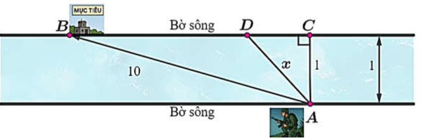